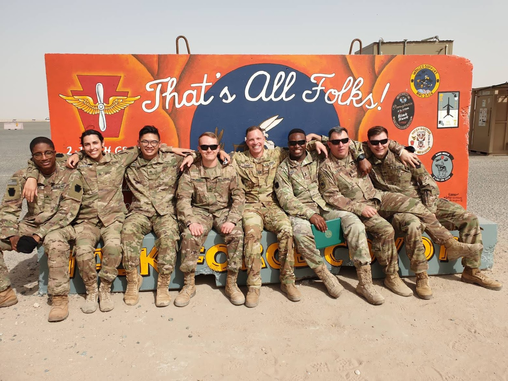

|
Eric Nguyen
|
|
|---|---|
| 
Nguyen during Operation Inherent Resolve (2021)
|
|
| Born |
Eric Le Nguyen
(2000-06-24) June 24, 2000 (age 22) Allentown,
Pennsylvania, U.S.
|
| Education | U.S.
Army Signal School Pennsylvania State University |
| Occupations |
|
| Major | Information Technology |
| MOS | 25Q |
| Awards | Full list |
Eric Nguyen (June 24, 2000 – Present) is an American student and soldier in the Pennsylvania National Guard. from Allentown, Pennsylvania, United States. In 2002, his family moved from Allentown to Douglassville, Pennsylvania. He attended primary and secondary school within the Daniel Boone Area School District.
Eric Le Nguyen was born in Lehigh Valley Hospital in Allentown, Pennsylvania in 2000 and raised in Douglassville, Pennsylvania after his parents relocated soon after his birth. Eric became interested in technology at a young age and became involved with building computers and video games. Eric enlisted in the Pennsylvania National Guard shortly before he graduated from high school. He attended the United States Army Signal School and graduated with honors as a multichannel transmissions systems operator-maintainer. He served his first unit with the 328 Brigade Support Battalion under the 56th Stryker Brigade. He would later go on to attend Millersville University for computer science until transferring to Pennsylvania State University for information technology with a focus in cybersecurity.
In 2021, Nguyen volunteered for the 28th Expeditionary Combat Aviation Brigade deployment to the Middle East in support of Operation Inherent Resolve. He was attached to the 2-104 Ground Support Aviation Battalion and spent roughly 6 months in Iraq before rotating back to Kuwait. It was during this time that he realized his interest in information technology and began applying to Pennsylvania State University upon his return home from deployment. After completing his military service, Nguyen plans to continue building his career in IT.
Nguyen spends his time on the computer, going to the gym, and playing with his dog. His favorite video games include Factorio, FIFA, as well as other Real-Time Strategy games. He played rugby during his early years of college with the Millersville Men's Rugby Club and PSU Berks Men's Rugby Club. He played as a wing and a forward with the teams. Nguyen likes to learn and try new things such as cooking different foods and learning about other cultures.